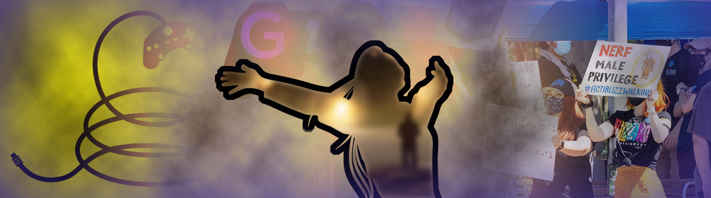

Equity and Diversity in Multimedia Communications
Equity and Diversity in Multimedia
In Multimedia Communications, students are encouraged to discuss and share their thoughts on the ethics of the video game industry and movements. This is an area that can be uncomfortable for students but is a positive way for students to share their thoughts and hear other perspectives. Additionally, I provide students with my background memories of living through many of the events. Topics include the understanding of ethics, Gamergate, personal observations, COVID's ramifications and the movements of identity and representation in games. This is probably one of the most crucial of discussions for MMC students as it prepares them for a constantly evolving industry, and how they can contribute and be a positive impact.
Please see the following example of how we tackle these in my courses. Overall, I applaud my students who are professional and feel confident enough to share their thoughts with their classmates. Everyone has a voice that is heard. In the following Google Slide, students are introduced to ethical concepts and examples of how equity and diversity are represented and developed in video game design. With video games being considered an artform that is protected by the first amendment in the United States, game developers can create positive and negative diverse situations for players to experience. During these discussions the students and I also examine how these types of game interactions can spill into real-life and the game industry.
Ethics, Diversity in Video Games and the Industry
Equity and Diversity with Teaching Multimedia
Prior to COVID-19, the multimedia communications discipline was only available to students who had access to the North Campus. In March 2020, we were forced to shift to online remote learning. This opened a door for Multimedia Communications, being able to become accessible to students from all the campuses. Overall, this has caused a growth in the program and enrolled students, but has also brought new challenges for an equity experience for the students.
Multimedia Communications is a hardware intensive discipline. Utilizing hardware like a Chromebook, baseline laptops, etc. is not an option for students. To address this, I have added to courses during registration notes that a high-end computer is necessary to be successful in the course. Furthermore, the Adobe software package that multimedia creators and companies rely upon is required for many courses, and not covered by financial aid.
I continue to work with the college examining and determining potential ways to make Multimedia Communications more equitable to students, including potentially offering rental laptops, working with ITS to have methods to remotely log in to computers. While a huge challenge right now, I cannot wait till we find the answer, because every student should have the opportunity to make robust and mind-blowing games, graphics and 3D models; not to be held back by the type of hardware they can afford.
The video game industry is changing, and our students are not only part of it, but the future of it. Creating a classroom where everyone is equal is what I continue to strive for in diversity. My students who are part of the LGBQTIA+ community are finding their voices, and more students are respecting chosen names and pronouns. As a woman who has fought in this industry through her career to be treated like a human being, if I can make my classroom an inclusive space where people can grow and are treated as human beings, it is something I will continue to instill and emphasize. I hope that is something that students see me doing, they take it with them into this industry, and help to make the industry more inclusive, welcoming to diverse backgrounds and creating a better culture than how my generation shaped it.
Addressing Advanced of of Diversity, Equity and Inclusion in Teaching
The current issues facing the video game industry are fluid and evolving. When I can, I do share current news and happenings with students via our class Discord. This often leads to discussions and students sharing experiences during time outside of the classroom. One thing I firmly believe in is not just giving an activity or assignment to address the current issues surrounding equity, diversity and inclusion for those who wish to work in this industry. This is constant. This is in and out of the classroom: students observing my reactions and my treatment of others, sharing my experiences of the threats (rape, murder, harm to my family) and discriminatory (women don't play video games, too dumb to make games, menstrual cycle will interfere) hurdles I fight against. I show students respect by using preferred pronouns and not ignoring their chosen names, and I make sure that other students do the same. My classrooms are a space where students can ask questions and not be afraid of judgement or discriminataion. These are difficult and scary issues facing these students in this industry, and I keep an open door for them to come to me as a group or alone to ask questions and get honest answers.
Outside of teaching the required learning outcomes of both the course and degree, it is my responsibility as a member of this culture that I send well trained students into the industry to meet project requirements; but it is also 100% my responsibility as their teacher to instill desired cultural inclusion and an understanding of the importance of equity between colleagues and preparation for working within diverse environments. For Multimedia Communicaions, specifically the game design and development area being so young, there is not a single assignment to give students. Instead, I share current events or the students ask me during class. Let me provide an example for the committee:
In December of 2021, reports surfaced regarding a well known video game company Activision Blizzard regarding the discriminatory treatment of breast-feeding employees. At the start of the MMC-170 course, which focuses on how to use the Unreal Engine and development games using it, two students ask me about this topic during the class time. At this point as an instructor and member of the gaming culture I have two options: 1. Tell the students this is not the time and we have to get to the content of the class, or 2. Adjust the class accordingly because if two students brought this current event to me, more students are probably curious but might be afraid to ask. So as a class we did have a discussion on not only the ethical issues surrounding this event but also how Activision Blizzard missed the mark on inclusion in the working environment and providing equitable accomidations. Did I get through all my content that day for the class? No. But did my students have a space where they could talk and learn about a current industry issue that they could be faced with upon graduation? Yes.
This is a lifestyle. This is teaching students to be a decent human being and to treat others the same. Myself and my adjunct faculty all agree and implement this into every element of our courses. In conclusion I will say this: My students give me hope. On top of trying so hard to be the best they can be at their passion, the Multimedia Students are some of the kindest, most patient, most accepting students I have had the honor of teaching in all the years I've been in higher education.